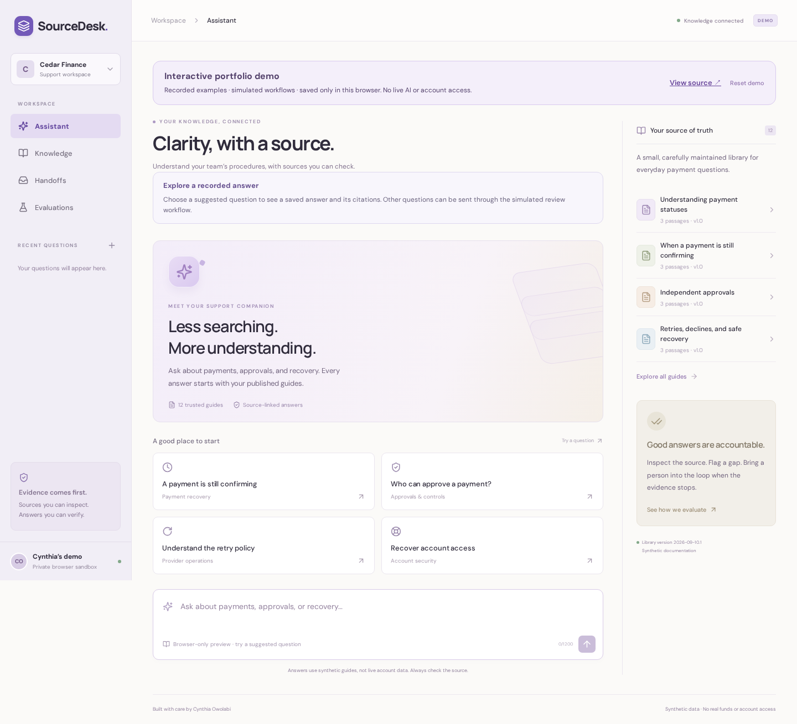

Cynthia Owolabi / Engineering case study
SourceDesk

A support answer needs inspectable evidence and a way to hand off questions it cannot responsibly answer. A valid quotation alone does not establish that a generated claim follows from it.
Problem and implementation
SourceDesk answers questions over 12 original synthetic payment guides. Its offline path retrieves and renders exact passages. Its optional live path uses embeddings, pgvector cosine retrieval and structured model-generated claims paired with supporting quotations. Account-specific and unsupported requests have explicit handoff paths.
Decisions and tradeoffs
Index generations are bound to corpus content and embedding model and replaced atomically, preventing a partially refreshed corpus from becoming the active index. Saved answers preserve source snapshots so later document changes do not silently rewrite their citations.
The small corpus uses exact vector search. This makes retrieval straightforward to inspect, but provides no evidence of large-scale retrieval performance. Exact quote checks reject invented passages and source IDs; they cannot determine semantic relevance, entailment or whether a source is itself correct.
A failure that changed the implementation
The initial authored regression run passed 38 of 40 cases. A role paraphrase abstained unexpectedly, and an account-specific request received general documentation. Normalization and scope handling fixes raised that same visible suite to 40 of 40. During live smoke review, a generated claim implied knowledge of an account; the prompt was strengthened to describe documented behavior conditionally.
Try the boundary
In the demo, ask a documentation question, inspect its quoted source, then ask about your own missing funds. Compare the answer and handoff paths. The hosted preview uses prepared synthetic responses; it does not call a paid model.
What the evaluation establishes
- 40/40 visible authored regression cases passed after fixes. The inspected “holdout” subset is now regression data, not an independent holdout.
- 30 real vectors were indexed and five live smoke cases passed. This checks connectivity, retrieval and output structure, not general answer quality.
- Human inspection identified a wording issue; no independently graded semantic-support score is claimed.
Methodology and failure record · Live smoke outputs · Installation
npm ci npm run evaluate
The command above runs the offline regression suite. No new paid evaluation was needed for this case study.
Limits and next evidence
This is a small curated corpus, not arbitrary document ingestion or a production support service. An independently authored unseen evaluation, with separate human judgments for claim support and abstention, remains future work. It would be misleading to relabel more development-authored questions as independent evidence.